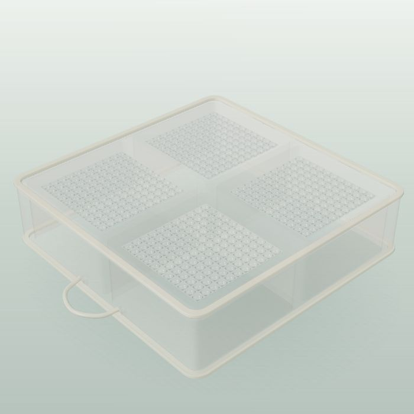

A new perspective.
The same CAVIGEN.
A quieter digital presence that grows from the existing brand. The original logo and colours, with a single type family and a material world inspired by microcavities.
Back to the website ↗Recognisable.
Across every touchpoint.
3D cultures.
Closer to life.
Clear language. Comfortable reading. A precise, practical voice for researchers.
Aa Bb Cc · 0123456789 · µm · O₂One visual language.
More than a website.
Style studies for future materials.
Not production-ready print files.
New perspectives.
CaviSphere®
3D cultures.
Closer
to life.

MicroSphere / PoroSphere / SensoSphereWhat stays.
What evolves.
The recognisable foundation
Preserve the original logo, orange, petrol, anthracite, Raleway. Existing materials remain part of the same brand family.
The digital expression
Add space, larger images, subtle optical depth and purposeful motion. On paper, translate movement into calm circular compositions.
The practical guardrails
Keep small text dark on orange. Keep the logo clear. Keep illustrations distinct from experimental evidence. Carry the same cavity forms into print. Confirm print colour profiles and image rights before external production.